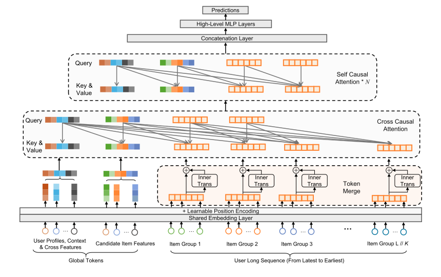
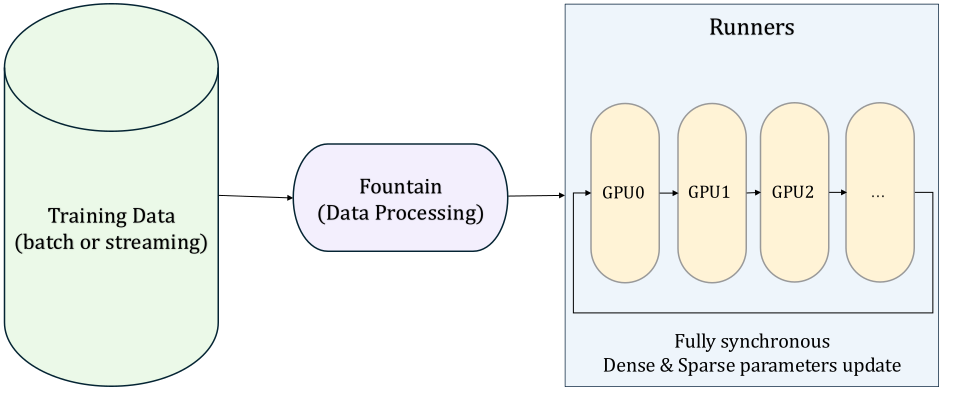
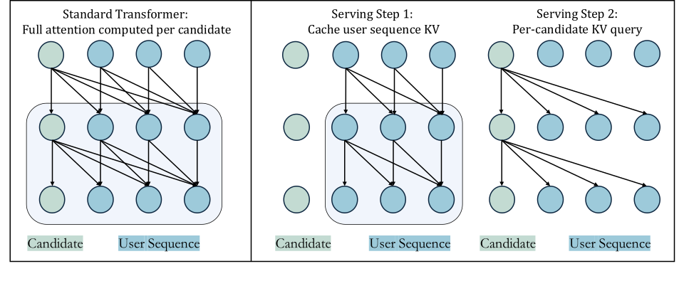
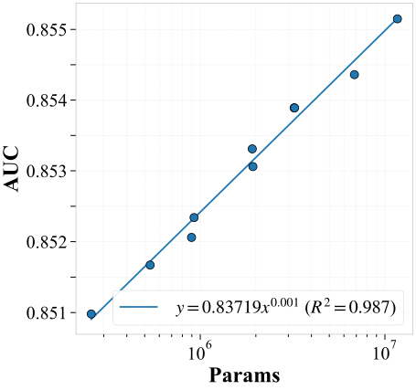
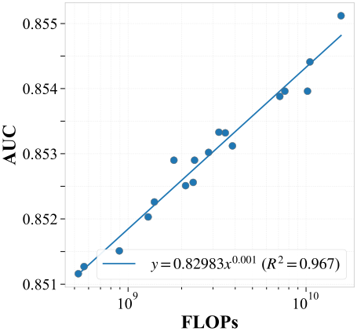

LONGER：在
工业推荐系统中扩展长序列建模
摘要
对超长用户行为序列进行建模对于在工业推荐系统中捕捉长期和短期偏好至关重要。现有解决方案通常依赖于两阶段检索或间接建模范式，从而导致上下游不一致和计算效率低下。在本文中，我们提出LONGER，一种面向GPU高效推荐系统的长序列优化Transformer。LONGER包含（i）一种全局词元机制，用于在长上下文上稳定注意力；（ii）一种带有轻量级InnerTransformers和混合注意力策略的词元合并模块，用于降低二次复杂度；以及（iii）一系列工程优化，包括采用混合精度和激活重计算的训练、KV缓存服务，以及用于统一基于GPU的稠密和稀疏参数更新的全同步模型训练与服务框架。在字节跳动的广告和电商服务中，LONGER在离线指标和在线A/B测试中均持续优于强基线，验证了其一致的有效性和工业级缩放定律。目前，LONGER已在字节跳动的数十个真实有影响力的场景中经过验证并全面部署，服务数十亿用户。
1. 引言
在推荐系统中，超长用户历史行为序列全面封装了用户的长期和短期偏好(He et al., 2023; de Souza Pereira Moreira et al., 2021)。尽管早期的序列建模架构已在学术界和工业界得到广泛研究和采用，但其应用仍主要局限于短序列场景（序列长度为）。充分建模长序列（长度 > ）对推荐准确性和多样性有显著益处，并有助于缓解信息茧房现象。然而，由于计算约束，当前工业界的长序列建模实践主要采用以下策略：
- •
- •
- •
尽管这些策略显著提高了计算效率，但由于上下游不一致或对原始超长序列的间接感知，它们不可避免地牺牲了原始全序列信息，因此这些方法本质上只是通向端到端长序列建模演进过程中的一个中间阶段。
近来，以GPT(Radford et al., 2018)为代表的大语言模型的快速发展确立了缩放定律——即预测性能随模型规模、数据量和算力增加而提升的经验原则。这些缩放定律近来指导了推荐系统的创新。例如，HSTU(Zhai et al., 2024)由一系列通过残差连接相连的相同自注意力层堆叠而成，用于建模长序列，其性能优于普通Transformer架构。Wukong(Zhang et al., 2024a)开发了一种基于堆叠因子分解机和线性压缩块的架构用于交互，并验证了推荐中的缩放定律。
与此同时，随着计算基础设施的快速发展（例如，GPU FLOPs/内存、大规模计算平台和框架的工程化），令人兴奋的是，这使我们能够在工业规模推荐系统中开创端到端超长序列建模范式。因此，推进超长序列的端到端建模，并持续扩展序列长度和改进长序列建模架构，是下一代序列建模框架的关键要务。
为此，我们提出了面向GPU高效推荐系统的长序列优化Transformer，即LONGER。在该框架中，我们将序列输入组织为全局词元和原始序列，并在此基础上开发了一种基于inner-transformer的词元合并方法，以有效降低计算预算。此外，由于用户超长序列中通常存在大量噪声，我们采用了一种高效的混合注意力策略，在保持模型性能的同时提高计算效率。此外，为了在十亿用户规模的工业级场景中全面部署LONGER，我们提出了一系列工程优化，包括采用混合精度和激活重计算的全同步训练与服务框架，以及KV缓存服务策略。总体而言，贡献主要总结如下：
-
•
我们提出了LONGER，一种面向GPU高效推荐系统的长序列优化Transformer结构。它通过优化Transformer结构提供了工业级GPU高效的视角，并在工业界以端到端方式将用户序列建模长度扩展至10,000。
-
•
LONGER通过词元合并和混合注意力策略充分提高了计算效率，减少了约50% FLOPs，并被验证为性能几乎无损。此外，还设计了一个全面优化的工业训练与服务框架，以进一步提高GPU计算效率和在线部署能力。
-
•
我们进行了全面的实验以验证其有效性。在十亿级工业数据集上的离线实验，以及在抖音11 1 一个拥有十亿用户规模的有影响力短视频平台：https://www.douyin.com/两个有影响力业务场景上的在线A/B测试，均验证了其性能。目前，LONGER已在字节跳动的数十个场景中广泛开发，影响着数十亿用户。
2. 相关工作
2.1. 传统短序列建模
迄今为止，工业推荐系统主要遵循序列建模和特征交互相结合的建模范式(Zeng et al., 2024; Wang et al., 2017)。在该框架内，序列建模长期以来在刻画用户偏好方面发挥着关键作用。在大量研究中，DIN(Zhou et al., 2018)是一个关键里程碑。后续方法包括DIEN(Zhou et al., 2019)、CAN(Zhou et al., 2020a)等。此外，多领域(Chai et al., 2025; Chang et al., 2023b)、多兴趣(Li et al., 2019; Chai et al., 2022)和序列去噪方法(Shin et al., 2024; Chen et al., 2022)被广泛研究，以从不同方面建模用户偏好。需要注意的是，这些精巧设计的结构大多是为短序列建模而开发的，而长序列建模方法后来才引起了越来越多的研究关注。
2.2. 长序列建模
3. 方法

3.1. 问题定义
令和分别表示用户集和物品集。给定一个用户及其原始行为序列（其中）、用户基础特征（包括用户画像、上下文特征和交叉特征）以及一个目标物品，推荐任务旨在预测点击或转化概率：
| (1) |
其中表示是否会与发生交互。模型通过优化二元交叉熵损失，从历史交互数据中学习这一映射：
| (2) |
其中为推荐模型预测的概率。
3.2. 整体框架
我们提出的框架旨在应对推荐系统中对长而复杂的用户行为序列进行建模的挑战，同时在工业规模下保持训练和推理效率。图1展示了我们提出的模型LONGER的整体架构。该框架集成了输入生成、词元合并、混合注意力机制以及训练-服务优化，以实现高效且可扩展的长序列建模。
首先，我们通过引入全局词元来增强模型输入结构，它们作为聚合锚点表示（例如，目标物品表示、用户ID（UID）嵌入），以促进全局信息融合并稳定注意力分布。接着，我们应用词元合并来压缩长行为序列，在保留必要局部模式的同时降低计算复杂度。为了进一步保持组内依赖关系，我们引入了InnerTrans，一种应用于合并词元片段内的轻量级内部Transformer。在LONGER模型结构中描述的核心模型架构采用混合注意力设计，结合了交叉因果注意力（用于突出序列中的显著部分）和堆叠的自因果注意力层（用于捕捉序列中的高阶依赖关系）。
为确保可扩展性和部署可行性，我们加入了若干工程系统级优化。该框架在超大规模GPU集群上提供全同步的训练与服务，并统一存储稠密和稀疏参数。我们进一步通过混合精度训练与重计算提高内存和计算效率，从而实现激活内存的减少和定制化数值精度。最后，在推理阶段，我们部署了KV缓存服务策略，该策略缓存用户序列表示并在候选物品打分时复用，显著减少了冗余计算。
这些组件共同构成了一个内聚的系统，支持具有高表达能力和高效率的长序列建模，并且可以很容易地部署在大规模真实推荐场景中。
3.3. 全局词元
我们引入全局词元作为附加到输入序列的辅助表示，以促进全局信息提取和锚定。这些词元可以包括目标物品表示词元、可学习的CLS词元、UID嵌入以及高阶压缩的用户-物品交互特征。按照设计，全局词元具有全注意力感受野，使它们能够聚合来自整个序列的上下文信号，同时也影响所有其他序列词元。
这种架构增强有两个主要目的。首先，全局词元作为集中式信息锚点，增强用户历史、上下文属性和候选物品之间的特征交互。其次，它们在长序列中稳定注意力动态，特别是在稀疏注意力配置下。正如StreamLLM(Xiao et al., 2024)所展示的，加入少量全局词元可以缓解“注意力汇”效应，即更深的注意力层不成比例地关注早期词元。这些词元作为锚点，维持注意力多样性并保持长程依赖建模。
3.4. 词元合并
设 为序列长度， 为嵌入维度。使用原始 Transformer 处理长行为序列（通常为 ）时，由于注意力复杂度呈二次增长 ，会带来难以承受的计算开销，尤其是当 （在工业推荐系统中通常为 、）时。序列截断等传统解决方案会导致长程依赖的丢失。为解决这一问题，我们提出了一种 Token Merge 策略，将相邻词元分组并压缩为更短的序列，从而实现模型效率与表示保真度之间的权衡。该策略将序列长度按 倍进行压缩，有效地执行了空间压缩。分组后的词元表示可以通过简单拼接形成，也可以通过轻量级 InnerTrans 块引入组内交互来进一步增强。该设计在效率与表达能力之间提供了灵活的权衡，在保留局部语义的同时，能够在更短的序列上进行全局建模。
给定一个标准结构的 Transformer 编码器层，其 FLOPs 和参数量可表示为 (Narayanan et al., 2021)：
| (3) | |||
| (4) |
计算复杂度。 词元合并前后的注意力复杂度之比为：
对于典型的 、：
-
•
原始 Transformer：
-
•
合并（）：（减少 42.8%）
参数扩展 词元合并通过缩短序列长度来降低计算复杂度，同时增加参数量 ，从而同时提升效率和模型的表达能力，有利于整体模型性能。
| (5) |
InnerTrans。 为了将多个相邻词元合并为一个，简单地拼接组内词元可能导致词元之间交互不足，从而可能丢失细粒度细节。为此，我们引入 InnerTrans，在每个词元组内应用一个 transformer 以实现局部交互。该方法确保有效捕获每组内部的交互，而不会出现直接拼接通常导致的信息丢失。由于维度和序列长度都非常小，InnerTrans 在实际中的计算预算相当有限。
| (6) |
其中 表示第 组的表示， 表示第 个物品嵌入，它属于第 组。
3.5. LONGER 模型结构
在我们的模型架构中，我们使用了一种混合注意力机制，结合了交叉注意力层和自注意力层，以高效地处理输入序列。
3.5.1. 输入生成
模型的输入由两个主要部分组成：全局词元和序列词元。全局词元表示上下文信息（例如目标物品特征和用户标识符，如第 3.3 节所述），与序列词元拼接后形成输入。
为了更好地捕捉用户行为序列中的时间动态，我们为序列词元增加了额外的位置侧信息。具体而言，引入了两种位置编码形式：（1）将绝对时间差特征作为侧信息，量化每次用户交互与目标物品之间的时间距离，并将其拼接到每个物品嵌入上；（2）将可学习的绝对位置嵌入加到物品嵌入上，该嵌入编码每个词元在序列中的位置。
经过位置编码后，所得词元通过多层感知机（MLP）生成其输入表示 ，其中 和 分别表示全局词元和序列词元的表示。然后，查询矩阵 通过将 个全局词元 与 个采样序列词元 拼接来构建，这些采样序列词元是根据预定义的采样策略从完整序列词元 中选取的。类似的查询压缩思想也已在其他研究领域得到探索，例如 Perceiver(Jaegle et al., 2021) 和 Q-Former(Li et al., 2023)，它们采用可学习词元策略进行压缩。在实验中，我们全面比较了不同策略，包括取最 近的 或 均匀采样的词元，或初始化 个 可学习词元，并发现 最近的 效果最佳。这种混合注意力设计还源于以下观察：模型性能相对于序列词元数量表现出强烈的边际效应：仅采样完整序列的 40% 即可保留超过 95% 的性能提升，同时减少约 50% 的 FLOPs（见第 4 节）。复合查询的构建方式如下：
| (7) |
这种混合设计将注意力同时集中于关键的局部行为和全局上下文信号，使模型能够高效地捕获具体的序列依赖关系和更广泛的上下文信息。
3.5.2. 交叉因果注意力（第一层）
在第一层注意力中，我们使用上一步生成的查询矩阵 和输入词元 应用交叉因果注意力。交叉注意力机制的计算方式为：
| (8) |
| (9) |
其中 、 和 分别表示形状为 的查询、键和值投影，掩码矩阵 定义为：
| (10) |
因果掩码设计一方面保持了序列物品之间的时间相关性，另一方面确保了序列对候选物品的不可见性，从而支持 KV Cache Serving 机制（见第 3.6.3 节）。计算完注意力后，结果通过前馈网络（FFN）进行进一步处理。
3.5.3. 自因果注意力（后续层）
在交叉因果注意力层之后，后续层由若干自因果注意力块组成。这些层专注于学习采样词元序列内部的相互关系，使模型能够捕获行为序列词元自身的依赖关系和模式。每个自因果注意力层后面都跟着一个 FFN，有助于进一步处理注意力机制所学到的信息。自因果注意力机制使用类似的公式进行计算：
| (11) |
这里，查询、键和值是通过对上一层的输出分别应用线性投影 、、 得到的。
3.5.4. 堆叠与压缩
自因果注意力层堆叠 次，以迭代地细化输入序列的表示。经过这些层后，模型产生压缩输出，即注意力机制的最终输出。该输出随后用于下游预测任务。
| (12) |
通过在第一层使用交叉注意力、在后续层使用自注意力的组合，我们的模型能够高效地处理长序列，同时利用全局上下文和内部依赖关系。
3.6. 训练与部署优化
3.6.1. 训练框架

我们的训练框架是一个为大规模稀疏模型设计的全同步系统，专门针对现代高性能 GPU 的能力进行定制。它基于软硬件协同设计理念构建，旨在最大化分布式训练中的计算吞吐量和内存效率。训练流程从以批处理或流式形式的数据摄入开始，随后通过 Fountain 模块进行预处理。处理后的训练数据随后被分发到多个 GPU runner，在其中同步更新稠密参数和稀疏参数。这种统一设计便于跨设备和节点进行有效扩展，为在生产环境中训练大参数模型提供了坚实的基础。
该框架的一个显著特征是其统一的参数存储和训练架构。稠密参数和稀疏参数都在 GPU 机器上同步存储和更新，无需外部参数服务器组件。为更好地适应推荐系统中的特征分布模式，该框架对稀疏嵌入采用分层内存系统，从而高效支持大型嵌入表。在该设计中，高频特征存储在高带宽 GPU 内存（HBM）中，中频特征驻留在 CPU 主存（MEM）中，低频特征则卸载到本地固态硬盘（SSD）。这种分层存储布局经过优化，以匹配推荐数据的访问特征，在延迟、吞吐量和容量之间提供了实用的权衡。核心创新在于将计算和参数存储完全同置于 GPU 机器上，从而减少通信开销和内存传输延迟。这带来了训练吞吐量的提升、陈旧度的降低以及收敛稳定性的增强。
3.6.2. 混合精度训练与重计算
为缓解训练期间的 GPU 内存压力，我们在混合精度训练之外采用了重计算策略。对于梯度计算，我们使用反向模式自动微分，它比前向模式更高效，但需要存储前向传播中的所有中间激活值。这些激活值可能成为主要的内存瓶颈。为解决这一问题，我们支持在模型定义层面声明重计算，允许在前向传播期间丢弃选定的激活值，并在反向传播期间重新计算。这以计算换取内存节省。由于原生 TensorFlow 不提供对重计算的官方支持，我们使用 custom_gradient 机制实现它，从而通过代码级注释实现细粒度控制。
此外，为减少稠密模型扩展带来的计算开销，我们采用基于 BF16/FP16 的混合精度训练。用户可以在模型层面配置精度，对关键组件应用更高精度，其他部分使用较低精度。该方法在生产工作负载中已显示出显著收益，平均包括吞吐量提升 +18%、训练时间减少 16%、内存使用减少 18%，稠密层内存最多可减少 28%。
3.6.3. KV Cache Serving
为提高对多个候选进行打分时的推理效率，受 M-FALCON (Zhai et al., 2024) 启发，我们引入了一种 KV 缓存机制，将用户行为词元与候选特定全局词元之间的注意力计算解耦。由于用户序列在各个候选之间保持不变，其内部表示可以计算一次并重复使用。
具体而言，我们将注意力输入拆分为两部分：（1）用户序列词元，（2）与候选物品关联的全局词元。用户序列的键和值投影会被预先计算并缓存。对于每个候选，仅计算其全局词元与缓存用户序列之间的注意力。这形成了两阶段推理过程：
-
(1)
预计算并缓存用户序列的键值张量。
-
(2)
计算每个候选的全局词元与缓存用户序列之间的注意力。

如图 3 所示，该优化避免了冗余计算，并显著降低了服务延迟。在实践中，它提高了在线服务效率，使吞吐量的相对变化从最差的 改善为仅 。
| Base | SumPooling | TWIN | DIN (Recent50) | DIN | HSTU | Transformer | LONGER | |
| AUC | 0.83968 | 0.84201 | 0.84472 | 0.84698 | 0.84982 | 0.84994 | 0.85111 | 0.85290 |
| LogLoss | 0.48758 | 0.48538 | 0.48168 | 0.47830 | 0.47452 | 0.47490 | 0.47293 | 0.47103 |
| AUC(%) | - | +0.28 | +0.60 | +0.87 | +1.21 | +1.22 | +1.36 | +1.57 |
| LogLoss(%) | - | -0.45 | -1.21 | -1.90 | -2.68 | -2.60 | -3.00 | -3.39 |
4. 实验
4.1. 实验设置
我们在抖音广告系统中的转化率（CVR）预测任务上评估我们的模型，这是一个真实的大规模工业广告推荐场景。数据集由10月16日（2024年）至2月23日（2025年）期间收集的在线用户交互日志的子集构建而成，包含5.2十亿个样本，覆盖130个连续日。每个样本包括用户人口统计学特征（如用户ID（UID）、性别）、超长用户行为序列以及一个候选广告项。用户行为序列包含多种交互类型，包括页面浏览、点击和转化，而物品侧特征涵盖广告内容、展示上下文及相关元数据。我们采用时间一致的数据划分策略：前123天用于训练，其余7天保留用于离线评估。该设置与真实世界的部署实践一致，并有效防止了模型开发过程中的未来数据泄漏。
为进行比较，我们将我们的模型与若干强基线进行评估，这些基线按其建模短程或长程用户行为的能力进行分类。短序列方法包括TWIN (Chang et al., 2023a)和DIN（Recent50），它们依赖50次交互。长序列方法，包括SumPooling、DIN(Zhou et al., 2018)、HSTU (Zhai et al., 2024)和Transformer(Chen et al., 2019)，处理扩展的行为历史，在工业环境中常常面临可扩展性和效率问题。所有模型均使用相同的预处理流程和超参数调优进行训练，实验在48×A100s GPU集群上进行。
| Configuration | FLOPs () | AUC | LogLoss | AUC | LogLoss |
| LONGER (w/o Merge, 2000) | 3.73 | 0.85111 | 0.47293 | +1.36% | -3.00% |
| +TokenMerge4(Concat, 500) | 2.13 | 0.85232 | 0.47145 | +1.51% | -3.31% |
| +TokenMerge8(Concat, 250) | 3.03 | 0.85291 | 0.47062 | +1.58% | -3.48% |
| Based on LONGER with TokenMerge8 | |||||
| + InnerTrans | 3.52 | 0.85332 | 0.47052 | +1.63% | -3.50% |
| Varying Query Number (Sampling Recent items) | |||||
| Query number = 50 | 1.27 | 0.85235 | 0.47162 | +1.51% | -3.27% |
| Query number = 80 | 1.59 | 0.85248 | 0.47157 | +1.52% | -3.28% |
| Query number = 100 | 1.91 | 0.85290 | 0.47103 | +1.57% | -3.39% |
| Query number = 150 | 2.36 | 0.85290 | 0.47101 | +1.57% | -3.40% |
| Query number = 200 | 2.93 | 0.85331 | 0.47077 | +1.62% | -3.45% |
| Query number = 250 | 3.52 | 0.85332 | 0.47052 | +1.63% | -3.50% |
| Query Selection Strategies | |||||
| Learnable 100 | 1.91 | 0.84946 | 0.47523 | +1.17% | -2.53% |
| Recent 100 | 1.91 | 0.85290 | 0.47103 | +1.57% | -3.39% |
| Uniform 100 | 1.91 | 0.85183 | 0.47215 | +1.45% | -3.16% |
| Recent50 + Rest Unif50 | 1.91 | 0.85255 | 0.47129 | +1.53% | -3.34% |
4.2. 整体性能
4.2.1. 现有方法的比较。
我们使用推荐系统中二分类的两个标准指标报告模型在离线评估集上的性能：AUC（ROC曲线下面积）和LogLoss。表1总结了多个基线和我们提出的模型的结果。根据该表，我们的模型优于所有基线，达到0.85290的AUC和0.47103的LogLoss，相较于基础模型在AUC上实现了1.57%的相对提升，并且相较于最具竞争力的模型（即Transformer）将AUC提升了0.21%。需要注意的是，在工业场景中，0.1%的提升被认为是能够影响在线A/B测试性能的显著提升。此外，所提出的模型相较于原始Transformer还展示出显著更高的效率（见第4.2.2节）。这一提升验证了我们的方法在保持计算效率的同时捕捉长程行为依赖的有效性。
4.2.2. 消融实验。
表2展示了关于LONGER中关键组件和查询相关配置的消融实验。我们首先考察TokenMerge模块和InnerTrans组件的影响。与未进行合并的基础模型相比，集成TokenMerge（Concat，250）将FLOPs从降至，同时将AUC提升1.58%并将LogLoss降低3.48%。进一步结合InnerTrans带来额外增益，实现最佳的整体LogLoss为0.47052，AUC提升1.63%。
接下来，我们改变用于总结近期用户行为的查询数量（）。结果表明，增加通常会提升性能，但也增加计算量。值得注意的是，使用100个查询实现了良好的权衡，AUC为0.85290，LogLoss为0.47103——非常接近使用全部查询（）时获得的性能，但FLOPs仅为54%。该设置在表2中以粗体突出显示，表明其在计算预算至关重要的真实世界部署中的实用性。
最后，我们比较不同的查询选择策略。这些策略可以被视为查询集的不同初始化方法。其中，使用可学习查询（随机初始化）表现最差（AUC = 0.84946）。相比之下，直接选择最近的100个用户行为（Recent 100）取得了最佳的整体性能。其他策略，例如均匀采样或组合近期与均匀采样的物品，则产生略低的AUC和更高的LogLoss。这些发现表明，用有信息量的行为——尤其是近期行为——来初始化查询，对于在长序列建模中有效捕捉用户意图至关重要。
总体而言，消融实验证实，架构增强（如TokenMerge、InnerTrans）和查询相关策略（如查询数量和选择方法）在平衡准确性和效率方面都起着关键作用。这些发现验证了LONGER通过精心设计其关键组件和行为建模流程，能够在降低计算成本的情况下取得强劲性能。这样的配置使我们的方法非常适合大规模工业部署，其中低延迟推理和系统吞吐量至关重要。
4.3. 缩放分析
在本节中，我们展示模型性能关于序列长度、FLOPs和参数数量的缩放分析。这些因素的缩放行为遵循一般形式：
| (13) |
其中表示性能指标（AUC和LogLoss），表示缩放因子（序列长度、FLOPs或参数），和为常数，表示常数偏移量。
4.3.1. 序列长度
我们分析性能如何随输入序列长度在不同模型深度下进行缩放。如图4所示，增加词元数量会持续提升AUC并降低LogLoss，遵循幂律趋势。更深的模型从更长的序列中获益更多，但AUC提升随深度放缓，表明收益递减。最佳深度应平衡模型容量和计算约束。
总体而言，更长的序列能提升性能，尤其是在搭配合适选择的深度时。超过某一深度后，进一步的增益变得边际化。


4.3.2. 参数
我们通过缩放隐藏维度大小来评估模型容量，同时将层数固定为2，输入序列长度固定为2000。如图5(a)所示，AUC随参数数量稳步提升，遵循强烈的幂律趋势（）。这些结果表明，在固定架构下增加模型宽度能有效提升性能，在当前的参数范围内没有饱和的迹象。
4.3.3. FLOPs
我们通过改变层数和序列长度来分析模型性能，同时将模型维度固定为32。如图5(b)所示，AUC随FLOPs稳步提升，遵循强烈的幂律趋势（）。这表明，增加计算资源使模型能够处理更长或更复杂的用户行为序列，捕捉高阶依赖并提高预测准确性，即使在固定的模型宽度下也是如此。
这些结果表明，增加计算资源是提升性能的有效方式，但效率增益应与真实世界系统中通常遇到的计算和内存约束相平衡。
4.4. 在线A/B测试
在本节中，我们展示在线A/B测试的结果，这些测试旨在评估所提出的模型在抖音广告和抖音电商平台这两个极具影响力的商业平台、吸引数十亿用户的真实场景中的有效性。这些场景中的基线模型已经相当强大，使得观察到的提升更加显著。双域测试使我们能够评估模型在广告和电商环境中的泛化能力，这两个环境是平台生态系统的关键组成部分。
4.4.1. 抖音广告平台。
本节展示抖音广告的A/B测试结果，我们使用两个关键指标评估我们模型的性能：ADSS（广告主得分）和ADVV（广告主价值），它们是工业广告系统中最重要的指标。测试在三种广告形式上进行：直播、短视频和商城。对于直播，模型在ADSS上实现了1.063%的提升，在ADVV上实现了1.168%的提升。在短视频形式中，ADSS提升了2.097%，而ADVV显示出2.151%的提升。在商城形式中，ADSS提升了1.816%，ADVV提升了1.407%。这些结果证实，该模型在所有广告形式中都能有效提升性能，且改进一致。
| Advertise Type | ADSS | ADVV |
| Live Streaming | +1.063% | +1.168% |
| Short Video | +2.097% | +2.151% |
| Mall | +1.816% | +1.407% |
4.4.2. 抖音电商服务。
对于抖音电商的A/B测试，我们使用两个关键指标评估不同内容形式的有效性：Order/U（每用户订单数）和GMV/U（每用户商品交易总额）。这些指标帮助我们理解模型不仅对总销售量的影响，还对用户级参与度和价值创造的影响。结果显示这两个指标均有显著提升。对于直播，Order/U提升了7.9222%，GMV/U提升了6.5404%，表明直播内容对每用户的订单数和产生的价值都有强烈的正向影响。在短视频内容中，Order/U提升了4.6125%，GMV/U提升了5.2771%，验证了短视频内容在提升每用户整体销售额方面的有效性。这些结果突显了两种广告形式的显著影响，其中直播在Order/U和GMV/U两方面均显示出明显更大的提升。
| E-commerce Type | Order / U | GMV / U |
| Live Streaming | +7.9222% | +6.5404% |
| Short Video | +4.6125% | +5.2771% |
5. 结论
在本文中，我们提出了LONGER，一个基于Transformer的框架，旨在为工业推荐系统中的超长用户行为序列提供高效且可扩展的建模。通过引入一系列架构设计，包括全局词元、带InnerTrans的词元合并、混合因果注意力，以及系统级优化，包括GPU同步框架、混合精度和重计算训练以及KV缓存服务，LONGER能够在真实世界工业约束下实现端到端的超长序列建模。在工业十亿级数据集上的广泛实验以及在广告和电商两个领域的在线A/B测试验证了其在十亿用户工业规模下的鲁棒性和泛化性。值得注意的是，LONGER在显著降低计算开销的同时实现了有竞争力的准确性，使其非常适合部署在延迟敏感的生产环境中。未来工作包括研究更高效的序列建模技术以及改进工业中的跨域行为建模。
参考文献
- User-aware multi-interest learning for candidate matching in recommenders. In Proceedings of the 45th international ACM SIGIR conference on research and development in information retrieval, pp. 1326–1335. Cited by: §2.1.
- Adaptive domain scaling for personalized sequential modeling in recommenders. In Proceedings of the 48th International ACM SIGIR Conference on Research and Development in Information Retrieval, pp. 4234–4238. Cited by: §2.1.
- TWIN: two-stage interest network for lifelong user behavior modeling in ctr prediction at kuaishou. In Proceedings of the 29th ACM SIGKDD Conference on Knowledge Discovery and Data Mining, pp. 3785–3794. Cited by: 1st item, §4.1.
- Pepnet: parameter and embedding personalized network for infusing with personalized prior information. In Proceedings of the 29th ACM SIGKDD Conference on Knowledge Discovery and Data Mining, pp. 3795–3804. Cited by: §2.1.
- Denoising self-attentive sequential recommendation. In Proceedings of the 16th ACM conference on recommender systems, pp. 92–101. Cited by: §2.1.
- Behavior sequence transformer for e-commerce recommendation in alibaba. In Proceedings of the 1st international workshop on deep learning practice for high-dimensional sparse data, pp. 1–4. Cited by: §4.1.
- Transformers4rec: bridging the gap between nlp and sequential/session-based recommendation. In Proceedings of the 15th ACM conference on recommender systems, pp. 143–153. Cited by: §1.
- A survey on user behavior modeling in recommender systems. In Proceedings of the Thirty-Second International Joint Conference on Artificial Intelligence, pp. 6656–6664. Cited by: §1.
- Towards universal sequence representation learning for recommender systems. In Proceedings of the 28th ACM SIGKDD Conference on Knowledge Discovery and Data Mining, pp. 585–593. Cited by: 2nd item.
- Perceiver: general perception with iterative attention. In International conference on machine learning, pp. 4651–4664. Cited by: §3.5.1.
- Multi-interest network with dynamic routing for recommendation at tmall. In Proceedings of the 28th ACM international conference on information and knowledge management, pp. 2615–2623. Cited by: §2.1.
- Blip-2: bootstrapping language-image pre-training with frozen image encoders and large language models. In International conference on machine learning, pp. 19730–19742. Cited by: §3.5.1.
- Augmenting sequential recommendation with pseudo-prior items via reversely pre-training transformer. In Proceedings of the 44th international ACM SIGIR conference on Research and development in information retrieval, pp. 1608–1612. Cited by: 2nd item.
- Large memory network for recommendation. In Proceedings of the ACM Web Conference, External Links: Document Cited by: 3rd item.
- MARM: unlocking the future of recommendation systems through memory augmentation and scalable complexity. arXiv preprint arXiv:2411.09425. Cited by: 3rd item.
- Efficient large-scale language model training on gpu clusters using megatron-lm. In Proceedings of the international conference for high performance computing, networking, storage and analysis, pp. 1–15. Cited by: §3.4.
- Practice on long sequential user behavior modeling for click-through rate prediction. In Proceedings of the 25th ACM SIGKDD international conference on knowledge discovery & data mining, pp. 2671–2679. Cited by: 3rd item.
- Search-based user interest modeling with lifelong sequential behavior data for click-through rate prediction. In Proceedings of the 29th ACM International Conference on Information & Knowledge Management, pp. 2685–2692. Cited by: 1st item.
- Improving language understanding by generative pre-training. Note: OpenAI technical report External Links: Link Cited by: §1.
- An attentive inductive bias for sequential recommendation beyond the self-attention. In Proceedings of the AAAI Conference on Artificial Intelligence, Vol. 38, pp. 8984–8992. Cited by: §2.1.
- Twin v2: scaling ultra-long user behavior sequence modeling for enhanced ctr prediction at kuaishou. In Proceedings of the 33rd ACM International Conference on Information and Knowledge Management, pp. 4890–4897. Cited by: 1st item.
- Deep & cross network for ad click predictions. In Proceedings of the ADKDD’17, pp. 1–7. Cited by: §2.1.
- Efficient streaming language models with attention sinks. External Links: 2309.17453, Link Cited by: §3.3.
- InterFormer: towards effective heterogeneous interaction learning for click-through rate prediction. arXiv preprint arXiv:2411.09852. Cited by: §2.1.
- Actions speak louder than words: trillion-parameter sequential transducers for generative recommendations. arXiv preprint arXiv:2402.17152. Cited by: §1, §2.2, §3.6.3, §4.1.
- Wukong: towards a scaling law for large-scale recommendation. arXiv preprint arXiv:2403.02545. Cited by: §1.
- Scaling law of large sequential recommendation models. In Proceedings of the 18th ACM Conference on Recommender Systems, pp. 444–453. Cited by: §2.2.
- CAN: revisiting feature co-action for click-through rate prediction. arXiv preprint arXiv:2011.05625. Cited by: §2.1.
- Deep interest evolution network for click-through rate prediction. In Proceedings of the AAAI conference on artificial intelligence, Vol. 33, pp. 5941–5948. Cited by: §2.1.
- Deep interest network for click-through rate prediction. In Proceedings of the 24th ACM SIGKDD international conference on knowledge discovery & data mining, pp. 1059–1068. Cited by: §2.1, §4.1.
- S3-rec: self-supervised learning for sequential recommendation with mutual information maximization. In Proceedings of the 29th ACM international conference on information & knowledge management, pp. 1893–1902. Cited by: 2nd item.
- Scaling sequential recommendation models with transformers. In Proceedings of the 47th International ACM SIGIR Conference on Research and Development in Information Retrieval, pp. 1567–1577. Cited by: §2.2.